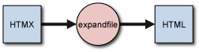

What expandfile does
How to use expandfile
Expandfile's HTMX language
Builtin Functions
Builtins Summary Table
Builtin Values
How to install expandfile
Auxiliary Helper Programs
This note describes expandfile, a simple command line program for expanding text templates. It is useful for many purposes, including enhancing HTML.
What expandfile Does
expandfile is a command line program that reads input files and writes output on standard output.
(It runs on MacOS, Linux, or Windows. It is an open source Perl program, MIT license,  available on GitHub.)
available on GitHub.)
Characters in the input are copied to the output, except that when expandfile sees %[... something ...]% it expands it: that is, replaces the bracketed expression by its value in the output. expandfile keeps an internal table of named values.
Values come from variables set by input files, command line parameters, builtin functions, macro execution, external calls, and shell environment variables set by export.
One of the main uses for expandfile is translating an extension language for HTML called HTMX into regular HTML. expandfile enables you to
- Provide consistent formatting and features to multiple web pages.
- Edit one file instead of many when making a global change.
- Automatically generate content in one web page that refers to other pages' content or status.
- Generate content and formatting from data files.

expandfile does not know the syntax of the text it is expanding. I have used it for many kinds of text transformation, including structured data to data transformations, e.g. CSV files => CSV files; CSV files => XML files; XML files => SQL files; SQL data => XML (e.g. sitemaps); SQL data => Procmail control files; SQL data => GraphViz input.
Command Usage
NAME
expandfile -- expand a template file
SYNOPSIS
expandfile [var=value]... filename...
DESCRIPTION
expandfile reads template files and writes out text to standard output with variables and builtin functions expanded.
If a filename argument is -, standard input will be read.
You can optionally specify variable bindings on the command line in the format varname=value.
I usually make configuration files consisting only of %[*set]% commands for project parameters, and provide them as the first filenames on the command line invocation of expandfile. Expanding these files sets values that can be used in expansions of subsequent filenames.
How To Use expandfile
With expandfile installed, you can type the command line
expandfile template.htmx > template.html
to expand template.htmx and write its output into the file template.html.
expandfile doesn't know the syntax of HTML. It just sees character input and writes character output.
I rarely type expandfile on a command line; usually I invoke it in scripts that expand template source files into object files. For example, most HTML files on my websites are updated by the make utility, driven by a Makefile that invokes expandfile to expand a source template if the corresponding object file is out of date. See Using Unix tools with expandfile.
File Suffixes
Files with any suffix can be used as input or output files with expandfile: the program doesn't care. You can call your files whatever you wish. I use a set of conventions to remind myself of what files contain:
- .htmx - HTML extended with variables and builtin functions.
- .htmi - HTMX include files *included by other HTMX files, e.g. macro libraries, configuration files.
- .htmt - HTMX template files, usually used to generate .htmx files.
- .tpt - template text files used to generate other kinds of files, e.g. Procmail input, site maps, RSS feeds.
You can use whatever file suffixes help you organize your source.
In addition, expandfile provides builtin functions that read text files containing structured data files in two formats, and apply templates to each structure element. See *csvloop and *bindcsv and *xmlloop. You can use any file suffix for these files: I use
- .csv - Text file in Comma Separated Values format, defined by RFC-4180.
- .xml - Text file in Extensible Markup Language (XML), described in W3C XML.
expandfile's *sqlloop builtin function can operate on data in SQL tables (configuration files define the database server location, user ID, etc). I load these tables from text files with this suffix:
- .sql - Text file containing CREATE TABLE and INSERT statements.
Variables
expandfile maintains an internal symbol table of variable names and their character string values. A variable's name should not be blank. Letters, digits, and ()_+- are allowed in variable names. (expandfile prints a warning if a variable name is all digits, because this is often an error.) Values are strings of characters, of any length. A variable that has never been set has a value that is the same as a variable with a zero length string value.
When expandfile is invoked, it starts with an empty variable table. The value of a variable is set by
- Expanding the *set builtin:
%[*set,&fred,="this is a value"]% - Expanding other builtin functions that set variables, for example *expandv, *sqlloop.
- Expanding a block definiton: %[*block,&fredblock,^END]% and some lines followed by END
- Supplying command line arguments to the invocation of expandfile
- expandfile initialization of builtin values, like
%[date]%
If expandfile does not find a symbol table entry for a variable name, it looks for a shell environment variable with that name (set by the export command), and if the variable is found, uses its value. If neither the internal table nor the shell environment supply a value, the expansion is an empty string.
expandfile builtin functions that set a variable require a & character in front of the variable name, to make it clear that the function will modify the value. If you leave the character out, a warning is printed.
When expandfile exits, the variable table is discarded.
Expansion
Examples of expandfile's expansion are:
- %[fred]% is replaced by the (string) value of the variable fred. If fred was never set, the result is an empty string. (This is not an error, and no warning is printed.)
-
Builtin functions look like this: %[*function,arguments...]%.
Some builtin functions expand to a value: others just change variables in the variable table.
For example:
- %[*func,a,b,c,...]% is replaced by the result of executing builtin function func with arguments a, b, c, ...
- %[*set,&fred,="thumper"]% sets the value of the variable fred to the string thumper, and is replaced by nothing. Tutorial example: setting variables.
- %[*callv,macro,a,b,c,...]% is replaced by the result of *expanding a (block) variable named macro with the values of arguments a, b, c, ... temporarily bound to param1, param2, param3, ....
- %[*block,&aaa,^EOF]% saves the raw text between the %[*block]% statement and the next line beginning with EOF into variable aaa, and is replaced by nothing.
- If a line contains only expansions %[...]%, the ending newline is not output.
Expandfile algorithm
- Create an empty symbol table and initialize builtin values like date.
- Read the input file into memory.
- Pass 1: invoke expandblocks to scan the memory copy for *block constructs. For each block,
- Note the block name and the ending regular expression.
- Copy subsequent input lines into a variable named with the block name, until a line matches the regexp.
- If the block already exists, append the contents to the end.
- Remove the block statement, contents, and regexp line from the memory copy.
- Pass 2: Call expandstring on the memory copy to
- Replace Multics formatting constructs if _xf_expand_multics is set.
- Constructs like {:...:} apply defined SPAN classes to text strings (4 variants).
- Constructs like {[tag anchor]} look up a tag in Multics database tables and create HTML links (4 variants). (Database parameters must be defined.)
- Replace %[*builtin...]% function calls with their values.
- Replace %[...]% variable references with their values.
- Replace Multics formatting constructs if _xf_expand_multics is set.
- Write the expanded memory copy out to standard output.
HTMX Language
expandfile was originally written in Perl, and inherits some Perl conventions, like the equivalence of an unset variable and an empty string.
Stream Processing
expandfile reads character string input and writes output to STDOUT. When reading input, the character \ is an escape character that is removed and removes the special meaning from the following character. For example, use "\\" to output "\". As described above, expandfile replaces named variables inside %[...]% by their values, and executes builtin functions like %[*builtin...]% that may take arguments, and may or may not output values.
Values in Argument Lists for Builtin Function Calls
Inside argument lists, literal values are preceded by = in order to distinguish them from variable names. For example, %[*set,&foo,=1]%.
expandfile prints a warning if it encounters a variable name that is all digits, because this may be an incorrectly formatted literal.
A string surrounded by double quote characters in a literal value prevents the interpretation of special characters, and is replaced by the contents without the quotes. Use quotes if the literal contains special characters such as , or %. To include a double quote character in a literal value, precede it with a backslash, e.g. \".
For example, the value of %[=say "hello \"world\"!"]% is say hello "world"!.
The literal string 14 can be expressed as =14 or ="14". Usually the second form is clearer.
Example:
If variable mike has the value nancy and variable nancy has the value 14, then
- %[*set,&fred,%[mike]%]% will expand to %[*set,&fred,nancy]% which will set variable fred's value to nancy and return nothing.
- %[*set,&fred,="%[mike]%"]% will set variable fred's value to the eight character string %[mike]%, because the quotes prevent expansion of the inner expression.
Outside of %[ ... ]%, double quotes are just characters, and expandfile just copies them. (expandfile treats single quotes as ordinary characters.)
Values and Types
Variable values are character strings. They can be zero length, i.e. empty. A reference to a variable that was never set is not an error: the value returned is an empty string.
Some operations perform arithmetic operations on values, using Perl semantics. Addition, subtraction, and so forth are defined for values that contain digits only.
Example: (reference to a variable containing a value)
If variable nancy has the value 14 then
%[*set,&fred,nancy]% will set variable fred's value to 14.
Example:
If variable carol has the value aaaa then
%[*increment,&carol,=1]% will set carol's value to 1
because Perl addition of an alphabetic string and an integer tries to convert aaaa to an integer and gets a value of zero.
This is not an error.
Nested Brackets
If expressions contain nested %[...]% sequences, the innermost set is expanded first.
Example:
If mike has the value nancy and nancy has the value 14, then
%[*set,&fred,%[mike]%]% will set fred's value to 14.
%[*set,&fred,=%[mike]%]% will set fred's value to nancy.
Builtin Functions
There are 37 builtin functions. They are pretty simple, mostly less than 10 lines of Perl each.
Some builtin functions write text to the output expansion; other builtins only change variables or cause other side effects; some do both.
Each builtin is briefly explained. See Expandfile Tutorial for more examples of many of these functions. A Builtin Summary table is provided below.
Tutorial example: Quoting, Constants, and Escaping.
Alphabetical List of builtins
- %[** ....]%
-
Contains a comment.
Outputs nothing.
Example:
%[** this is a remark **]%. -
- %[*bindcsv,=file_or_url(in)]%
-
Read CSV file file_or_url and set variables.
Outputs nothing.
Fetch the contents of the specified file, local or remote, and treat it as a two-line file Comma Separated Values file. (RFC-4180 defines this format. expandfile allows NL, CR, or CRLF line terminations, but does not support quoted line separators.)
If the name given begins with "http" or "https", read the file from the Internet URL. Otherwise, read a local file. If the name given ends with ".gz" or ".z", unzip the file contents.
- The first line is a comma separated list of variable names.
- The second line is a comma separated list of variable values.
- Bind each variable name to its corresponding value.
The variable _xf_colnames is set to a space separated list of the column names.
Example:
%[*bindcsv,=inputfile.csv]%The *bindcsv builtin will not set variables whose names begin with underscore or period. A warning will be printed. If the = sign is omitted before the name of the input file or URL, a warning is printed.
Be careful about security if you read external values from the Internet and expand them. Sanitize your values before expanding.
- %[*block,&blockname(out),regexp(in)]%
-
Append unexpanded source lines to blockname until regexp.
Outputs nothing.
Read input lines following this command until a line matching the regular expression regexp is found. (For regexp, use something like "^EOF$".) Concatenates all of the lines read into blockname, and removes them from the input, until a line matching regexp is read. Text in %[...]% is copied with its brackets without expansion into blockname: when the block is expanded later, the bracketed constructs will be processed. Specifying multiple blocks with the same blockname will append content to the block. The *block builtin should be used alone on a line.
This construct is used to set up a variable containing text that can be expanded later, or expanded many times as an iterator, or called as a macro with *callv.
Example:
%[*block,&iterblock,^END]%
<tr><td>%[table1.name]%</td><td>%[table1.addr]%</td></tr>
END - %[*callv,block(in),args...(in)]%
-
Expand block with arguments (subroutine call).
Outputs whatever is output by expanding block.
- Save all the variables param1,param2,param3,....
- Assign each variable param1=arg1,param2=arg2,param3=arg3,...
- Set _xf_n_callv_args to the number of arguments
- Expand block block, which can refer to param1 and so on.
- Restore all the variables param1,param2,param3,....
Use the *block builtin to define subroutine blocks, or use *include to load macro libraries containing multiple blocks. See Expandfile Macros for more about macro calls. The saving and restoring means that one block can invoke another block without arguments getting mixed up.
Execution of a block can set other variables in the symbol table that persist after callv ends. This behavior can be useful or dangerous: a good convention is to name temporary variables with a leading underscore.
If *callv is called with an empty block, a warning is printed. (The first argument to *callv should not be quoted, since it is a block name.)
Example:
%[*callv,gettwodigit,month]%See Macros in expandfile for more information on macros.
- %[*concat,&result(inout),valarg(in)...]%
-
Concatenate the values of each valarg onto result.
Outputs nothing, rewrites first argument.
Example:
%[*concat,&line,cityname,=", ",statename]% - %[*csvloop,&result(out),iter_block(in),=filename(in)]%
-
Set result to concatenated expansions of iter_block for each data row in filename.
Outputs nothing.
filename is an ASCII text file in CSV (comma separated values) format, like those produced by spreadsheet programs. RFC-4180 defines this format.
If the name given ends with ".gz" or ".z", the file contents are unzipped.
The first row in the file is a heading row containing variable names for each column.
For each subsequent row, bind column variables named in the heading row like colname1 to corresponding values in the row; and then expand iter_block, which can refer to these bound variables. Append the result of the expansion to result.
If the CSV file is missing, expandfile exits with an error message. (Maybe it should keep going, or there should be a switch saying what to do.)
The variable _xf_nrows is set to the count of rows found by the query.
The variable _xf_colnames is set to a space separated list of column names bound by the query.
Example:
%[*csvloop,&report,btrr_iter,=btrr.csv]% - %[*decrement,&variable(inout),value(in)]%
-
Decrement variable's contents.
Outputs nothing, rewrites first argument.
Subtract the value in value from the value in result and store the result back into result. Uses Perl semantics.
Example:
%[*decrement,&openfiles,="1"]% - %[*dirloop,&result(out),iter_block(in),=dir(in),starrex(in)]%
-
Set result to concatenated expansions of iter_block for each entry in dir matching starrex.
Outputs nothing.
Operates on each file-system file in a directory dirpath whose name matches starrex. For each file, do a Unix stat() operation on the file and bind variables to the values of the file attributes, and then expand iter_block, which can refer to these variables. Append the result of the expansion to result.
The variables bound are
file_name name of the file file_type 'f' for file, 'd' for directory, 'l' for link file_dev device number file_ino inode number file_mode mode in Unix character format, e.g. "rwx--x---" file_nlink number of hardlinks to the file file_uid numeric file owner userid file_gid numeric file owner groupid file_rdev rdev (for special files) file_size size in bytes file_atime last access time file_mtime last mod time file_ctime inode change time file_blksize preferred block size file_blocks allocated blocks file_sec mtime seconds (2 digits) file_min mtime minutes (2 digits) file_hour mtime hour (2 digits) file_mday mtime day of month (2 digits) file_mon mtime month (2 digits) file_year mtime year (2 digits) file_wday mtime day of week (0-6, Sunday is 0)) file_yday mtime day of year file_isdst 1 if mtime is DST file_datemod mtime in the format "mm/dd/yy hh:mm" file_modshort mtime in the format "mm/dd/yy" file_sizek file size in K file_age age in days The variable _xf_nrows is set to the count of files found.
Example:
%[*dirloop,&content,fmt_one_file,=".",="."]% - %[*dump]%
-
Display the contents of all variables in the symbol table.
Outputs one line per defined variable.
Example:
%[*dump]%**dump quote**=**"** **dump fred**=**mike** **dump mike**=**nancy** **dump nancy**=**14** ... - %[*exit]%
-
Abort expandfile execution.
Outputs nothing.
Example:
%[*exit]% - %[*expand,var(in)]%
-
Output the expansion the contents of var including variable and builtin references.
Outputs value of var, expanded.
var may contain variable names and builtin invocations in %[... ]%. Nested expansions are possible if the variable invokes %[*expand,...]% or other builtins.
Outputs the value of expanding var. If var contains %[ ... something ...]% constructs, they will be expanded.
Example: output the contents of a variable
%[*expand,footnote_separator]%.
Example: output the contents of a variable whose name depends on another variable
%[*expand,footnote_%[ftn]%]%. - %[*expandv,&result(out),var(in)]%
-
Set result to expansion of var including variable and builtin references.
Outputs nothing.
var may contain variable names and builtin invocations in %[... ]%. Nested expansions are possible if the variable invokes %[*expand,...]% or other builtins.
Sets its first argument to the expansion of var. Outputs nothing. If var contains %[ ... something ...]% constructs, they will be expanded.
Example:
%[*expandv,&f_name,convert_cityname]% - %[*fappend,=filename(in),value(in)...]%
-
Append concatenated value args to the contents of filename.
Outputs nothing.
Example:
%[*fappend,=tracefile.txt,timestamp,=" ",traceoutput]% - %[*format,&result(out),fmtstring(in),vars...(in)]%
-
Replace placeholders of the form "$1" .. "$n" in fmtstring with values of the vars.
Outputs nothing.
Example: combine cityname and statename:
%[*format,&line,="$1, $2",cityname,statename]%
Example: Generate an HTML IMG tag:
%[*format,&imgtag,="<img src=\"$1\" width=\"$2\" height=\"$3\">",filename,height,width]%
Example: Generate GraphViz (dot) input:
%[*if,ne,t.st,="invis",*format,&x,="$1 -> $2 [xlabel=\"$3\",style=\"$4\",color=\"$5\"];\n",y.n1,y.n2,y.b,y.e,t.o]%The second example statement was used in an iterator block in an application that produced a block diagram from an SQL file.
- %[*fread,&result(out),=filename(in)]%
-
Read the contents of filename into result.
Outputs nothing.
If the input file is not found, set content to the empty string. Does not expand blocks, builtins, or variables.
Sets its first argument. Outputs nothing.
Example:
%[*fread,&pienumber,=pienumberfile]% - %[*fwrite,=filename(in),value(in)...]%
-
Rewrite filename with concatenated value args.
Outputs nothing.
Replaces any previous contents of filename.
Example:
%[*fwrite,=pienumberfile,counter]% - %[*htmlescape,value(in)...]%
-
Output the HTML-escaped value of concatenated value args.
Outputs the escaped string.
For instance, html-escaping "<fred>" yields "<fred>".
Example:
%[*htmlescape,filename]% - %[*if,relop(in),v1(in),v2(in),statement...(in)]%
-
if (v1 relop v2), expand statement.
Outputs If condition is true, whatever the contained statement outputs.
Perform the comparison v1 relop v2 and if it is TRUE, expand statement. statement can be any set of HTMX evaluations, including more "if" builtins. relop is the name of a comparison operator. The supported operators are:
- eq numeric equality
- ne numeric inequality
- gt numeric greater-than
- lt numeric less-than
- ge numeric greater-equal
- le numeric less-equal
- =~ regular expression equality
- !~ regular expression equality
- teq string equality
- tne string inequality
- tgt string greater-than
- tlt string less-than
- eqlc string equality, case independent
- nelc string equality, case independent
Outputs whatever statement outputs.
Example:
%[*if,eq,city,="Chicago",*set,&arpt,="ORD"]%.
Nested *if statements:
%[*if,ne,gnm,param1,*if,ne,tnms,="",*callv,rec_grpname2grpid,param1]%
Another nested *if statement, setting up a format string for the *format builtin:
%[*if,gt,x3,param3,*if,gt,x1,=0,*set,&fmt,=" <span class="inred">($1$2%)</a>"]% - %[*include,=filename(in)]%
-
Output the expanded content of filename.
Outputs filename content, expanded.
Expands blocks, builtins, and variables. Sets _xf_currentfilename to the file being included while processing the include.
If the file is not found, this is a fatal error and expandfile exits.
Example:
%[*include,=page-wrapper.htmi]%. - %[*includeraw,=filename(in)]%
-
Output the content of filename, unexpanded.
Outputs filename content, unexpanded.
Does not expand blocks, builtins, or variables.
If the file is not found, this is a fatal error and expandfile exits.
Example:
%[*includeraw,=data_table.txt]%. - %[*increment,&variable(inout),value(in)]%
-
Increment variable's contents.
Outputs nothing, rewrites first argument.
Add the value in value to the value in result and store the result into result. Uses Perl semantics.
Example:
%[*increment,&pageno,="1"]% - %[*ncopies,&result(out),value(in),n(in)]%
-
Set result to n copies of value.
Outputs nothing.
Concatenate n copies of the value in value and store the result into result.
Example:
%[*ncopies,&amt,="*",width]% - %[*onchange,var(in),*statement(in)]%
-
Execute statement when value of var changes.
Outputs whatever is output by contained statements.
If the value of var has changed, execute the statement. This builtin is useful in iterators invoked by *sqlloop, *csvloop, *xmlloop, *dirloop, and *csvloop.
Example:
%[*onchange,x,*callv,wrap,x,=" <dt>",="</dt>\\n"]%
outputs a line that surrounds the value of x with <dt> and </dt> if x is nonempty and changed. (See the definition of the wrap macro in Macros in expandfile). - %[*onnochange,var(in),*statement(in)]%
-
Execute statement when value of var is unchanged.
Outputs whatever is output by contained statements.
If the value of var has NOT changed, execute the statement. This builtin is useful in iterators invoked by *sqlloop, *csvloop, *xmlloop, *dirloop, and *csvloop.
If an iterator block uses both *onchange and *onnochange, put the onnochange call first.
Example:
%[*onnochange,x,*increment,&titles,=1]% - %[*popssv,&result(out),&ssv(inout)]%
-
Set result to first element of ssv, and ssv to the remainder.
Outputs nothing, rewrites second argument.
Variable ssv should contain a list of strings separated by a separator character whose value is in _xf_ssvsep. (By default the character is a space -- SSV means "space separated values.") Remove the leftmost element of ssv, store it in result, and rewrite ssv with the rest. If ssv contains only one element, store it in result and leave ssv empty.
See also the *ssvloop builtin.
Example:
%[*popssv,&next_player,&jersey_numbers]% - %[*product,&result(out),value(in),factor(in)]%
-
Set result to value times factor.
Outputs nothing.
Multiply the value in factor by the value in value and store the result in result. Uses Perl semantics.
Example:
%[*product,&mins,hours,=60]% - %[*quotient,&result(out),dividend(in),divisor(in)]%
-
Set result to dividend divided by divisor.
Outputs nothing.
Divide the value in dividend by the value in divisor and store the result in result. Discard the fractional part. Uses Perl semantics. If divide by zero is attempted, the result is 0.
Example:
%[*quotient,&cows,hooves,=4]% - %[*quotientrounded,&result(out),dividend(in),divisor(in)]%
-
Set result to dividend divided by divisor, rounded.
Outputs nothing.
Divide the value in dividend by the value in divisor and store the result in result, rounded to the nearest integer. That is, compute int((dividend / divisor) + 0.5); If divide by zero is attempted, the result is 0. Uses Perl semantics.
Example:
%[*quotientrounded,&cows,hooves,=4]% - %[*scale,&result(out),n(in),range(in),base(in)]%
-
Set result to int(((n*base)/range)+0.5).
Outputs nothing.
Compute int(((n*base)/range)+0.5) and store the result in result. range is the maximum value for the variable n and base is the maximum scaled value.
For example, if you are drawing an HTML horizontal bar graph that will be 500 pixels wide (the base), of variables that run from 0 to 1000 units, then each graph pixel will represent 2 units.
Example: Computing the width of a bar in the graph:
%[*scale,&barwidth_pixels,wtdayhist.dhits,.maxdhits,=500]%
<img src="redpixel.gif" height="10" width="%[barwidth_pixels]%">
This uses up to 500 pixels to display a graph bar whose longest bar represents .maxdhits. - %[*set,&result(out),valarg(in)...]%
-
Set result to concatenated valarg arguments.
Outputs nothing.
If a value begins with an = then it is a literal value. Otherwise it is a variable name whose value is used.
Example: set a variable to a constant string.
%[*set,&title,="Expandfile Usage"]%.
Example: set a variable to the value of another variable.
%[*set,&title,datafield]%.
Example: set a variable to the concatenated values of several arguments. (quote is a builtin value.)
%[*set,&htt,="https://multicians.org/thvv/htmx/expandfile.html"]%
%[*set,&anchorstring,="Expandfile"]%
%[*set,&test6,="<a href=",quote,htt,quote,=">",anchorstring,="</a>"]%.quote is a builtin value whose value is a double quote character. I could have written ="\"" instead.
- %[*shell,&result(out),command(in)...]%
-
Execute shell command and set result to its output.
Outputs nothing.
The string sent to the command processor is the concatenation of the values of command arguments.
If multiple lines are returned, newline characters are replaced by the contents of _xf_ssvsep. The command output is stored in result.
Be careful about security if you execute shell commands based on user input.
You can write your own functions, or use Unix programs such as grep, sed, awk, or sh.
Several useful utility functions are supplied with expandfile.
Example: get the date modified of a file (*shell is called with one argument, which contains an expansion of the variable parm1)
%[*shell,&filed,=filemodshort %[param1]%.htmx]%
Example: get the age in days of the index file in a directory (note the concatenation of constants and variable values)
%[*shell,&xage,="filedaysold ",obj_dir,="/",param1,="/index.html"]%
Example: use perl to modify a disk file to remove the string "NAMESP:" everywhere (note that double-quote is preceded by \ inside a string)
%[*shell,&xout,="perl -pi -e \"s/NAMESP://g\" ",filenamevar]%
Example: invoke the mysql command to load a disk file containing MySQL statements (note that we don't quote the argument)
%[*shell,&xout,=mysql --execute \"source %[sqlloadfile]%\"]%
Example: invoke the curl command to download output from a web service API
%[*shell,&xout,=curl %[endpoint]%/%[cmd]% -X POST -d %[JSON_rq]% -H \"Content-type: application/json\" > xx.json]%Performance was not a consideration in the design of the *shell builtin. Executing command lines this way is done by launching a fairly large shell process, and then launching additional processes for each command in the arguments to the shell. (I expand one template, sitemap.htmx, which invokes filemodshort and filesizek for each of over 1000 pages. There is a pause of 10 seconds or so when the template is expanded.)
- %[*sqlloop,&result(out),iter_block(in),query(in)]%
-
Set result to concatenated expansions of iter_block for each row returned by MySQL query.
Outputs nothing.
Execute the MySQL query query, which returns a number of rows. Each row returns a set of variables. Bind the variables in the symbol table using names like table.varname1, and then expand iter_block, which will refer to these variables. Append the result of the expansion to result. (Because _xf_colnames is set before iter_block is expanded, the iterator need not know the complete schema of the database.)
The variable _xf_nrows is set to the count of rows found by the query.
The variable _xf_colnames is set to a space separated list of column names bound by the query.
Computed values such as "COUNT(*) AS yearct" that have no tablename are bound to names like .yearct.
The variables _xf_hostname, _xf_database, _xf_username, and _xf_password must be set up to point to the MySQL database server before sqlloop is invoked, or expandfile will exit with an error message.
Some database errors are retryable, for instance if the server goes down. sqlloop will retry these errors 10 times before exiting with an error.
If there is a fatal database or query error, expandfile exits with an error message.
If the query is empty, a warning will be printed and _xf_nrows will be set to 0. It is not an error for a query to return 0 rows, but a warning will be printed.
Example: generate a bar chart summarizing population by country name from table "s":
%[*sqlloop,&chartout,chart_iter,="SELECT country, COUNT(*) AS v FROM s WHERE fake=0 GROUP BY country"]%To execute a query just to set a total, specify a variable for the loop output that you never use, and a null iterator, and refer to the query result, e.g.
%[*sqlloop,&junk,="",="SELECT COUNT(*) AS minors FROM tbl WHERE age < 21"]%
%[*set,&minorcount,%[.minors]%]% - %[*ssvloop,&result(out),iter_block(in),ssv(in)]%
-
Set result to concatenated expansions of iter_block for each element of ssv.
Outputs nothing.
An SSV (space separated values) list is a variable value composed of tokens separated by the value in _xf_ssvsep (usually space).
Operate on each token in the SSV varname. For each token, bind _xf_ssvitem to the value (null tokens are skipped), and then expand iter_block, which can refer to _xf_ssvitem. Append the result of the expansion to result. This loop works on a copy of varname, so the input SSV is not changed.
The variable _xf_nssv is set to the count of tokens found in the SSV.
See also the *popssv builtin.
Example:
%[*ssvloop,&nextstorybody,nextstory-iter,filenamesbydate]% - %[*subst,&var(inout),leftside(in),rightside(in)]%
-
Substitute right for left in var.
Outputs nothing, rewrites first argument.
Replace the value in result by the result of the Perl substitution s/left/right/ig. Slashes in left and right must be escaped -- use \\.
left can contain parenthesized patterns, as in Perl substitutions; these patterns can be referenced in right as \\1, \\2, etc.
Example: truncate a name to its first 40 characters
%[*subst,&name,="^(........................................).*$",="\\1"]%
Example: trim off the directory portions of a pathname
%[*subst,&pname,="^.*\\/",=""]%Be careful about security if you read external values from the Internet and use them in arguments to *subst. Watch out for backticks.
- %[*urlfetch,&result(out),url(in)]%
-
Set result to contents of url.
Outputs nothing.
Fetch the contents of the Internet URL url into result. If the target is not found, set content to the empty string. Does not expand variables or blocks.
Be careful about security if you read external values from the Internet and expand them. Sanitize your values before expanding. Watch out for %[]% and backticks.
Example:
%[*urlfetch,&contents,=%[_xf_ssvitem]%]% - %[*xmlloop,&result(out),iter_block(in),=filename(in),xpath(in)]%
-
Set result to concatenated expansions of iter_block for each XML item in filename matching xpath.
Outputs nothing.
filename is an ASCII text file in XML format. It may be zipped.
Operate on each item the file as found by Xpath: if this argument is missing, the default is "/*/*". For each item found by the Xpath, the loop binds the values of sub-items "./*" and binds the values of attributes "./@*", and then expands iter_block, which will refer to these variables. Append the result of the expansion to result.
If no Xpath is provided, the outermost structure in the file should be something like <list> ... </list> and it should contain repeated items <item> ... </item> which in turn contain multiple fields like <person> ... </person> and <address> ... </address>. For each item, bind the values of fields in the symbol table using names like person.
The variable _xf_nxml is set to the count of items found by the query.
The variable _xf_xmlfields is set to a space separated list of variable names bound by the query.
If the XML file is empty or malformed, _xf_nxml is set to 0 and nothing is done. If the XML file is missing, expandfile exits with an error message. This is ugly: I should think of a better solution.
Example:
%[*xmlloop,&junk,iter_gacc,=gacc.xml,="*/computers/computer"]%I use a simple Perl program called json2xml to translate JSON data (fetched from a web API) into XML data, which I then process with *xmlloop.
- %[*warn,args...(in)]%
-
Write args to STDERR.
Outputs nothing.
Write a warning message of all concatenated args... on STDERR.
Example:
%[*warn,No results for %[query]%]%
Builtin Summary
Some builtin functions write output to the output file. Others produce no output but instead change an argument variable. A few functions conditionally expand the rest of their arguments, so these produce wherever result the expanded arguments request.
Builtin functions that modify an argument use & before the variable name to remind you that the value will be modified. If you omit the &, expandfile prints a warning. Some builtins with & have in/out args, others are out.
| Builtin | Function | Output |
|---|---|---|
| ** | Starts a comment | nothing |
| *bindcsv,=file_or_url(in) | Read CSV file file_or_url and set variables | nothing |
| *block,&blockname(out),regexp(in) | Append unexpanded source lines to blockname until regexp | nothing |
| *callv,block(in),args...(in) | Expand block with arguments (subroutine call) | whatever is output by expanding block |
| *concat,&result(inout),valarg(in)... | Concatenate the values of each valarg onto result | nothing, rewrites first argument |
| *csvloop,&result(out),iter_block(in),=filename(in) | Set result to concatenated expansions of iter_block for each data row in filename | nothing |
| *decrement,&variable(inout),value(in) | Decrement variable's contents | nothing, rewrites first argument |
| *dirloop,&result(out),iter_block(in),=dir(in),starrex(in) | Set result to concatenated expansions of iter_block for each entry in dir matching starrex | nothing |
| *dump | Display the contents of all variables in the symbol table | one line per defined variable |
| *exit | Abort expandfile execution | nothing |
| *expand,var(in) | Output the expansion the contents of var including variable and builtin references | value of var, expanded |
| *expandv,&result(out),var(in) | Set result to expansion of var including variable and builtin references | nothing |
| *fappend,=filename(in),value(in)... | Append concatenated value args to the contents of filename | nothing |
| *format,&result(out),fmtstring(in),vars...(in) | Replace placeholders of the form "$1" .. "$n" in fmtstring with values of the vars | nothing |
| *fread,&result(out),=filename(in) | Read the contents of filename into result | nothing |
| *fwrite,=filename(in),value(in)... | Rewrite filename with concatenated value args | nothing |
| *htmlescape,value(in)... | Output the HTML-escaped value of concatenated value args | the escaped string |
| *if,relop(in),v1(in),v2(in),statement...(in) | if (v1 relop v2), expand statement | If condition is true, whatever the contained statement outputs |
| *include,=filename(in) | Output the expanded content of filename | filename content, expanded |
| *includeraw,=filename(in) | Output the content of filename, unexpanded | filename content, unexpanded |
| *increment,&variable(inout),value(in) | Increment variable's contents | nothing, rewrites first argument |
| *ncopies,&result(out),value(in),n(in) | Set result to n copies of value | nothing |
| *onchange,var(in),*statement(in) | Execute statement when value of var changes | whatever is output by contained statements |
| *onnochange,var(in),*statement(in) | Execute statement when value of var is unchanged | whatever is output by contained statements |
| *popssv,&result(out),&ssv(inout) | Set result to first element of ssv, and ssv to the remainder | nothing, rewrites second argument |
| *product,&result(out),value(in),factor(in) | Set result to value times factor | nothing |
| *quotient,&result(out),dividend(in),divisor(in) | Set result to dividend divided by divisor | nothing |
| *quotientrounded,&result(out),dividend(in),divisor(in) | Set result to dividend divided by divisor, rounded | nothing |
| *scale,&result(out),n(in),range(in),base(in) | Set result to int(((n*base)/range)+0.5) | nothing |
| *set,&result(out),valarg(in)... | Set result to concatenated valarg arguments | nothing |
| *shell,&result(out),command(in)... | Execute shell command and set result to its output | nothing |
| *sqlloop,&result(out),iter_block(in),query(in) | Set result to concatenated expansions of iter_block for each row returned by MySQL query | nothing |
| *ssvloop,&result(out),iter_block(in),ssv(in) | Set result to concatenated expansions of iter_block for each element of ssv | nothing |
| *subst,&var(inout),leftside(in),rightside(in) | Substitute right for left in var | nothing, rewrites first argument |
| *urlfetch,&result(out),url(in) | Set result to contents of url | nothing |
| *xmlloop,&result(out),iter_block(in),=filename(in),xpath(in) | Set result to concatenated expansions of iter_block for each XML item in filename matching xpath | nothing |
| *warn,args...(in) | Write args to STDERR | nothing |
(If I had it to do over, I might make all functions take an output argument, and have none of them write to the output.)
Builtin Values
These values are inserted in the symbol table by expandfile when it is invoked. It is probably a bad idea to store into any of these... should I add a "locked" flag to these? (Example value in parentheses.)
| %[year]% | year (2026) |
| %[prevyear]% | previous year (2025) |
| %[day]% | day (24) |
| %[month]% | month (Mar) |
| %[prevmonth]% | previous month (Feb) |
| %[monthx]% | numeric month (03) |
| %[hour]% | hour (12) |
| %[min]% | min (38) |
| %[date]% | date in text format (24 Mar 2026) |
| %[timestamp]% | timestamp (2026-03-24 12:38) |
| %[pct]% | percent (%) |
| %[lbkt]% | left bracket ([) |
| %[rbkt]% | right bracket (]) |
| %[lbrace]% | left brace ({) |
| %[rbrace]% | right brace (}) |
| %[quote]% | double quote (") |
| %[_xf_currentfilename]% | current file name being expanded (xfwrapper.htmi) |
| %[_xf_version]% | version of expandfile (6.03) |
Special Values
These values control the behavior of expandfile or are set as a result of executing a builtin function.
| %[_xf_expand_multics]% | user config | If nonblank, enable Multics expansions. |
| %[_xf_debug]% | user config | If nonblank, enable warnings about unset variables. |
| %[_xf_tracebind]% | user config | If set to a nonblank value, causes *set, *block, *sqlloop, *csvloop, *xmlloop, *dirloop, and *csvloop
to print a message on STDERR when they bind a value to a variable. |
| %[_xf_ssvsep]% | user config | Separator between elements of a Space Separated Values list. Default is " ". |
| %[_xf_nssv]% | Set by *ssvloop | Number of elements processed. |
| %[_xf_ssvitem]% | Set by *ssvloop | Current item inside an iterator block being expanded. |
| %[_xf_nrows]% | Set by *sqlloop, *csvloop, *dirloop | Rows read |
| %[_xf_colnames]% | Set by *sqlloop, *csvloop, and bindcsv | SSV of column names bound. |
| %[_xf_xmlfields]% | Set by *xmlloop | SSV of XML item names bound. |
| %[_xf_nxml]% | Set by *xmlloop | Number of XML items read. |
| %[_xf_n_callv_args]% | Set by *callv | Number of 'paramN' args to macro. |
| %[_xf_currentfilename]% | Set by expandfile | Name of file currently being read. |
Macro Libraries
One way to extend the function of expandfile is to write macros. As mentioned above, you can define these macros using *block, and expand them using *callv. If you decide to use the macros for more than one file, it is natural to move the macros to a separate file (I use the file suffix .htmi meaning "HTMX Include") and incorporate them into the files that invoke them with a command like %[*include,=macro_lib.htmi]%.
A library of macros called htmxlib.htmi is provided with expandfile. It contains macros you can use or adapt to your own needs.
For example, one macro is getimgdiv, which can generate HTML IMG tags with the WIDTH and HEIGHT of a graphic. The IMG tag will use SRCSET when a graphic image is represented in multiple sizes, to show the optimum image for the viewer's screen resolution. (see High DPI Pictures.) Call it by
%[*callv,getimgdiv,path,target,alttag,titletag,class,caption]%
See "Macros in Expandfile" for more information.
Multics Mode Formatting Expansions
expandfile also expands nine special text formatting macros developed to simplify the source of the multicians.org website, its first application. See "expandfile Features for Multicians.org" for more information. These macros are applied to all text, whether inside %[ ... ]% or not.
To prevent these macros from being expanded and interpret them as literal text, precede them by a backslash (\). For example, \{: ... :}, \{\= ... =}, \{\+ ... +}, \{\- ... -}, \{\* ... *}, \{\[ ... ]}, \{\{ ... }}, \{\! ... !}, \{\@ ... @} .
How To Install expandfile
Basically, you set up some OS tools and prerequisite software, and then download expandfile and its Perl module files and some auxiliary files from github.com/thvv/expandfile, and install them on your search path.
- Macintosh
-
The Mac Terminal program gives you a Unix command shell.
Install Apple Xcode to get command line tools such as make, git, and rsync.
Install Mac tools and Perl from homebrew to get up-to-date versions.
- install Apple Xcode (free from Apple) from the App Store
- install the Xcode command line tools from the Xcode menu
- Set environment variables so your /bin is searched (see below)
- install any programs and libraries you need from MacPorts or Homebrew
- Install MySQL from Oracle or Homebrew (see below)
- Install Perl (see below).
- Install CPAN modules needed by expandfile (see below)
- Visit the
 expandfile github repository and clone the repository
expandfile github repository and clone the repository - Copy expandfile and its Perl modules to your /bin
- Linux and Unix
-
Unix distributions come with some command line tools already installed.
You may need to use your distribution's package manager to install additional programming tools
in order to get make, rsync, and so on.
- Set environment variables so your /bin is searched (see below)
- install programs and libraries you need from your package manager, including MySQL
- Install Perl if it is not already installed
- Install CPAN modules needed by expandfile (see below)
- Visit the expandfile github repository and clone the repository
- Copy expandfile and its Perl modules to your /bin
- Windows
- Use an environment like MINGW, MSYS2, or Cygwin to install a command shell, Perl, MySQL, CPAN Perl modules, and then use the Unix instructions. (I haven't tried this in a long time. I have never tried PowerShell.)
Set up a bin directory and Set Environment Variables
Create a directory called /bin in your home directory, and then add it to your PATH environment variable, by issuing the following commands in a Terminal or shell window (assuming your shell is bash):
cd $HOME mkdir bin echo "export PATH=$HOME/bin:$PATH" >> .bash_profile . .bash_profile
Set Values in Your Shell Environment
Arrange to set configuration values for Perl in your shell environment. Linux and Windows will be similar. For example, if you are using Perl 5.38 on a 64-bit Mac using Homebrew, you would set up
export VERSIONER_PERL_PREFER_32_BIT="no" export PERL5LIB=/Users/thvv/bin:/opt/homebrew/lib/perl5/5.38:/opt/homebrew/Cellar/perl/5.38.2_1/lib/perl5/site_perl/5.38 export PERL_LOCAL_LIB_ROOT="/usr/local/lib/perl5/5.34" export PERL_MB_OPT="--install_base "/usr/local/lib/perl5/5.38"" export PERL_MM_OPT="INSTALL_BASE=/usr/local/lib/perl5/5.38"
in your .bash_profile.
Install Perl
expandfile is written in the Perl language. Your computer must have Perl installed, and your Perl library has to have a few modules installed. Most Linux systems come with Perl, with the library set up. To check if Perl is installed and what version it is, type perl -v; my computer says
This is perl 5, version 38, subversion 2 (v5.38.2) built for darwin-thread-multi-2level
For Macintosh on macOS Sequoia, I install Perl with Homebrew. Once Homebrew is installed, you can add packages such as ImageMagick. See https://formyfriendswithmacs.com/homebrew.html.
expandfile and its helper programs in Perl have a "shebang" line of #!/usr/local/bin/perl,
which selects which version of Perl will be executed when the shell executes a command.
On my Mac, Homebrew sets up /usr/local/bin/perl.
On Linux, I link /usr/local/bin/perl to /usr/bin/perl.
Ensure that your shell environment variable PERL5LIB points to your $HOME/bin and to libraries for the same version of Perl.
On my Mac using Sequoia, my PERL5LIB is /opt/homebrew/lib/perl5/5.38:/opt/homebrew/Cellar/perl/5.38.2_1/lib/perl5/site_perl/5.38.
On Linux, my PERL5LIB is $HOME/bin:/usr/local/lib/perl5.
Set your shell environment variables VERSIONER_PERL_PREFER_32_BIT, PERL_LOCAL_LIB_ROOT, PERL_MB_OP, and PERL_MM_OPT for your local environment.
Install MySQL
expandfile needs MySQL even if you never invoke *sqlloop, because it loads the CPAN module DBD::mysql, which won't install unless MySQL is available. (I am looking into a way to remove this dependency.) There is no standard Perl way to only load a module if it is needed at runtime. Download and install MySQL.
- On a Macintosh, see https://formyfriendswithmacs.com/mysql-sl.html for instructions about how to get MySQL from Oracle or Homebrew.
- On Fedora Linux, install mysql-community-server and community-mysql-devel using the dnf package manager.
- On Ubuntu Linux, install libdbd-mysql-perl and libmysqlclient-dev using the apt package manager.
- Or consult the Oracle pages.
(On my Mac, using homebrrew, I ensure that /opt/homebrew/bin is on my PATH before $HOME/bin.)
To configure MySQL, define a "root" user and password, and create a database. (Installing mysql may generate a temporary root password you have to change. This seems to be different for each MySQL release.) Then set up the file .my.cnf in your home directory so that you can access the database without giving your password every time. You'll want to set up an expandfile configuration file like config.htmi that sets values for expandfile, so that your programs don't have to have the credentials baked in.
"On Unix, MySQL programs treat the host name localhost specially, in a way that is likely different from what you expect compared to other network-based programs. For connections to localhost, MySQL programs attempt to connect to the local server by using a Unix socket file. This occurs even if a --port or -P option is given to specify a port number. To ensure that the client makes a TCP/IP connection to the local server, use --host or -h to specify a host name value of 127.0.0.1, or the IP address or name of the local server. You can also specify the connection protocol explicitly, even for localhost, by using the --protocol=TCP option."
Install Perl Modules from CPAN
Expandfile depends on having several Perl library modules installed. If these are not installed already, install them using CPAN:
| Module | Description |
|---|---|
| LWP::Simple | Support for *urlfetch and *bindcsv |
| Term::ANSIColor | Support for error messages |
| DBI and DBD::mysql | Support for *sqlloop |
| XML::LibXML | Support for *xmlloop |
| XML::Simple | If you use json2xml |
| JSON | If you use json2xml |
Install and configure cpan if it is not installed, and then install these modules using the cpan command. e.g.
sudo -H cpan install XML::LibXML
On a Mac, see https://formyfriendswithmacs.com/cpan-sl.html.
On Fedora Linux, I found that XML::Simple::get was failing on https URLs. A little test got the message 501 Protocol scheme 'https' is not supported (LWP::Protocol::https not installed) at t.pl line 8. Trying to install LWP::Protocol::https failed with CPAN errors. I had to manually install Net::SSLeay to get it to work.
Download expandfile from Git
Visit  https://github.com/thvv/expandfile in your browser.
https://github.com/thvv/expandfile in your browser.
Click the green "Code" button.
Choose "Clone" or "Download ZIP."
Move the downloaded files into your bin directory.
This will give you the following files in your /bin directory:
| Filename | Description |
|---|---|
| expandfile | Command line program |
| expandfile.pm | Internals of expandfile |
| readbindsql.pm | Internals of expandfile for *sqlloop |
| readbindxml.pm | Internals of expandfile for *xmlloop |
Helper Programs
You also get some useful helper programs in Perl, for invocation by the *shell builtin.
| Filename | Description | Example |
|---|---|---|
| checknonempty | exit with error if arg is missing or empty; used in Makefiles | |
| csv2sql.htmt | HTMX macro to convert a CSV file to a SQL table declaration | -- |
| filedaysold | return file age | %[*shell,&x,=filedaysold example-page.htmx]% 1598 |
| filemodiso | return file mod date as yyyy-mm-dd/td> | %[*shell,&x,=filemodiso example-page.htmx]% 2021-11-07 |
| filemodshort | return file mod date as mm/dd/yy | %[*shell,&x,=filemodshort example-page.htmx]% 11/07/21 |
| filemodyear | return year of file modification | %[*shell,&x,=filemodyear example-page.htmx]% 2021 |
| filesizek | return file size | %[*shell,&x,=filesizek example-page.htmx]% 1 |
| firstletter | return first letter of a string | %[*shell,&x,=firstletter abcdef]% A |
| firstofnextmonth | return date of the first of next month | %[*shell,&x,=firstofnextmonth]% 01 Apr 2026 00:00:00 GMT |
| fmtnum | return a number formatted with commas, as a file size, or as a date | %[*shell,&x,=fmtnum 1234567 num]% 1,234,567 |
| fmtsql | return a string formatted so that it can be input safely to mysql | %[*shell,&x,=fmtsql "isn't"]% isn''t |
| gifsize2 | return image size: used by getimgdiv macro | %[*shell,&x,=gifsize2 tinymultics.gif]% 16 16 tinymultics.gif |
| gifsize | display length of a graphic | %[*shell,&x,=gifsize tinymultics.gif]% "tinymultics.gif" width="16" height="16" |
| gth2x | shell script to generate 150x150 thumbnails (uses ImageMagick magick) | -- |
| gthumb | shell script to generate thumbnails (uses ImageMagick magick) | -- |
| htmxlib.htmi | macro library | -- |
| lowercase | return lowercase version of a string | %[*shell,&x,=lowercase Boston]% boston |
| nargs | return the number of args | %[*shell,&x,=nargs 1 2 3]% 3 |
| padstring | pad a text field with blanks to a given width | %[*shell,&x,=padstring 6 "X"]% "X " |
| padleft | pad a text field with blanks on the left to a given width | %[*shell,&x,=padleft 6 "Q"]% " Q" |
| uppercase | return uppercase version of a string | %[*shell,&x,=uppercase hello]% HELLO |
| xml2sql | translate a simple XML file into a SQL table declaration | -- |
You can write other little commands to invoke with %[*shell]% to extend HTMX, as shell scripts or programs in C, Perl, Python, and so on, and place them in your /bin directory. You can also invoke Unix commands with %[*shell]%, such as date, grep, sed, awk, cut, and sort.
Try it out
You should be able to type the command
expandfile
and get a USAGE message, and no errors. This will show that expandfile and its needed Perl modules are correctly installed.
Type the command
expandfile foo
where foo is a plain text file without %[...]% or \ and you should get the same output as the contents of foo.
Then try some of the examples in the expandfile Tutorial.
HTMX source of this page
The HTMX source file that generates this page is expandfile.htmx. Notice that the source *includes the library file htmxlib.htmi and the wrapper file xfwrapper.htmi
A little explanation:
- Comments are indicated by %[** .... ]%.
- The last line of the source file calls *include to read the wrapper file: %[*include,=xfwrapper.htmi]%. Wrapper files provide the standard structure for all the expandfile pages.
- The page source defines some *blocks and then *includes the wrapper, which provides basic page structure and expands the defined blocks in the right order. One block that the source file defines is called body: it has most of the page contents. The wrapper expands body in the proper sequence. Variables and blocks in the page source can override or supplement items specified in the wrapper.
- When this page's source describes a builtin function, it calls a macro named bif using *callv. The macro appends HTML TR elements to a string variable called biflist which contains a TABLE with a row for each builtin. The variable contents are inserted later in the source under the heading Builtin Summary Table. Thus I only have to type the builtin description once, and each builtin's description will always match the table entry. The macro also counts the number of builtins in bifcount and a CAPTION element containing this value is added to biflist so that the table displays with a count of rows.
- Notice the use of backslashes in the source to quote the percent and bracket characters.